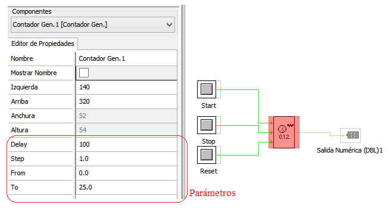

Este CONTADOR permite contar en un margen "ACOTADO".
Entradas:
Start: Inicia Cuenta Stop: Detiene cuenta Reset: Pone a cero la cuenta
Start: Inicia Cuenta
Stop: Detiene cuenta
Reset: Pone a cero la cuenta
